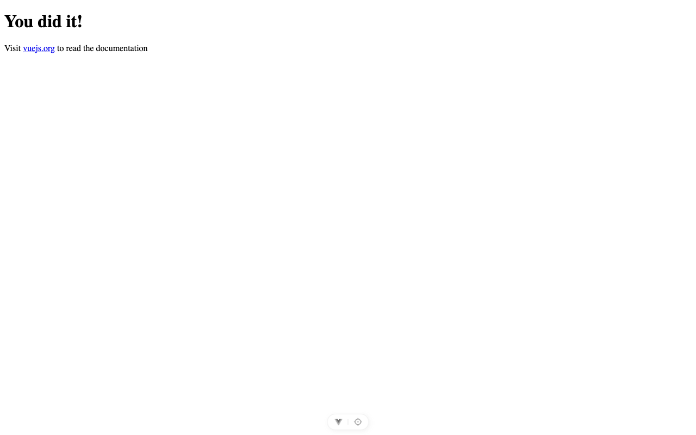
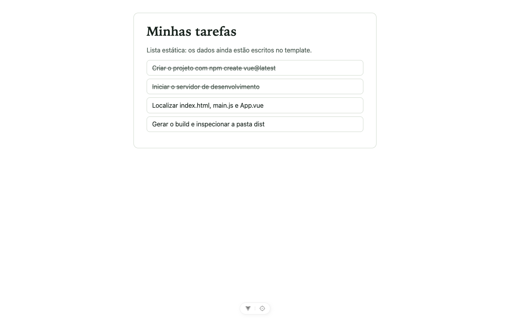
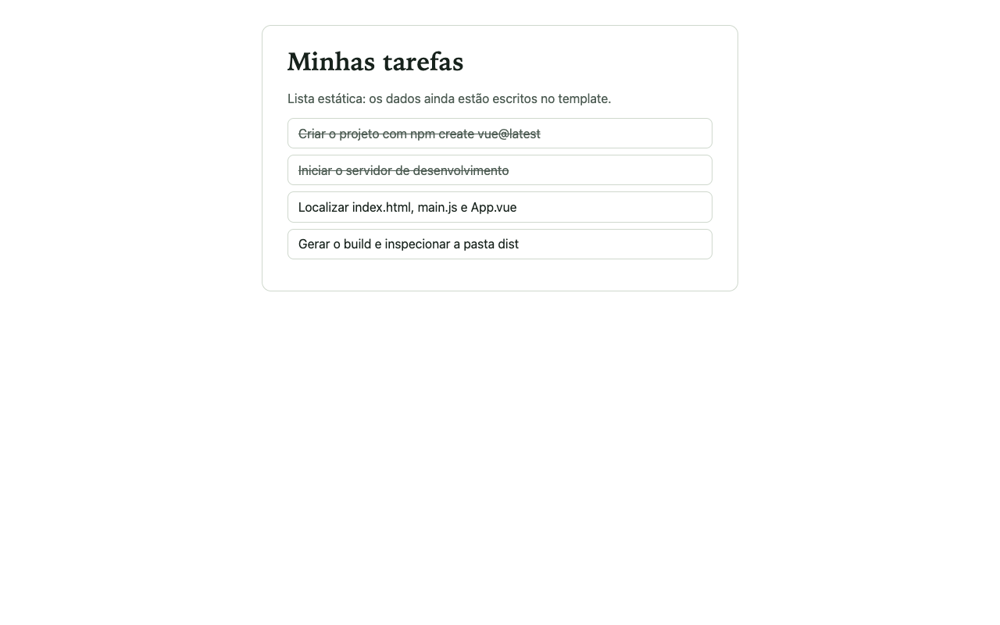
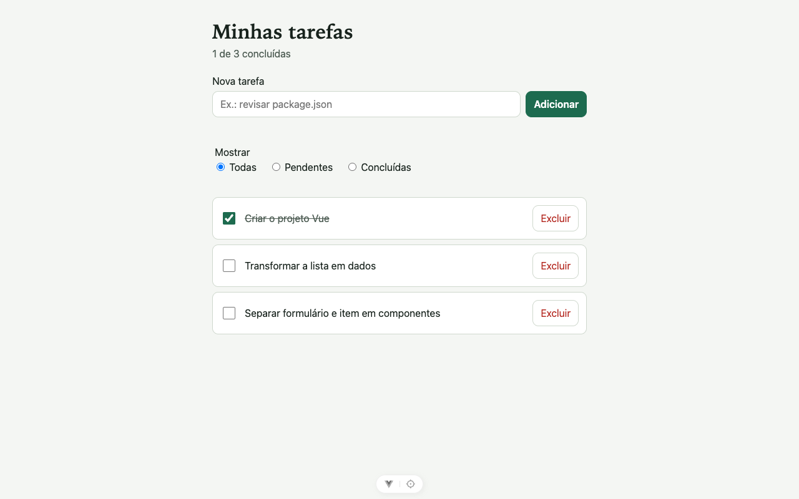
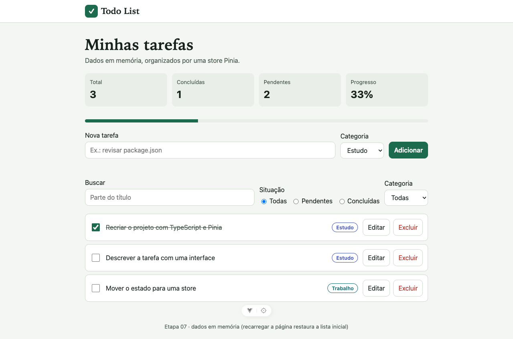
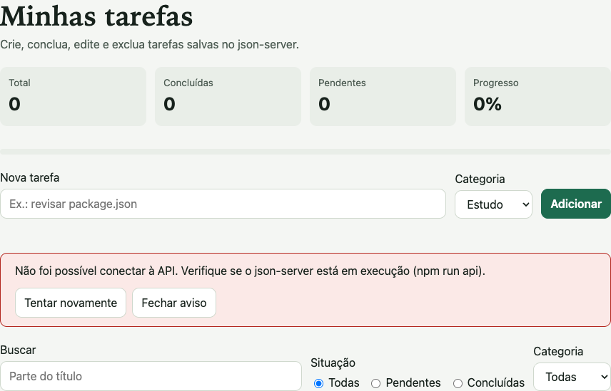
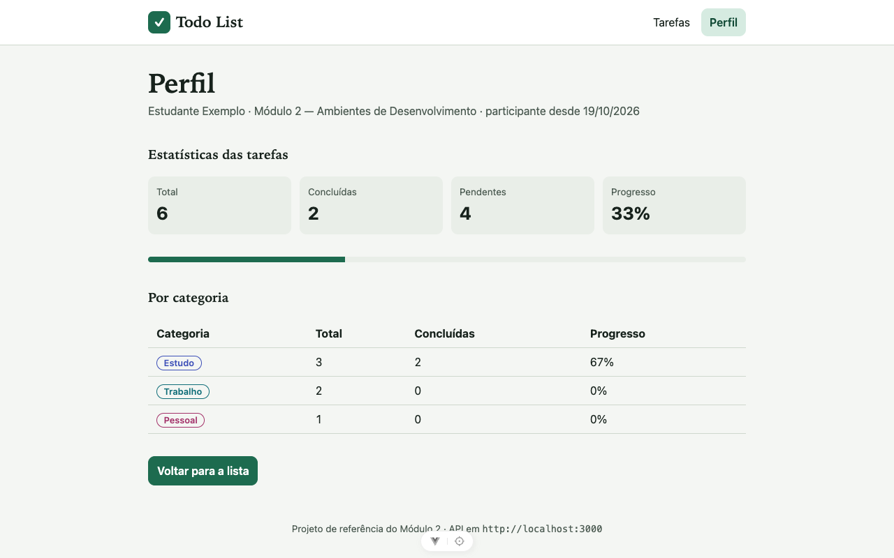

Desafio: preparar o ambiente da Todo List em Vue
Hoje você cria o projeto, encontra os arquivos de entrada, altera o componente raiz, gera o build — e explica cada passo com evidências.
| Critério de conclusão | Evidência observável |
|---|---|
| Projeto criado sem instalação global | Pasta todo-list com package.json |
| Dependências instaladas | node_modules/ e package-lock.json; terminal sem erro |
| Servidor de desenvolvimento ativo | Endereço da linha Local: aberto no navegador |
| Componente raiz alterado | Título e lista estática de tarefas na tela |
| Build gerado e explicado | Pasta dist/ e o papel de cada arquivo |
Ponto de retomada: etapas/05-vue-inicial é o estado final esperado
deste bloco (npm ci e npm run dev).
create-vue, Vue e Vite: três responsabilidades
create-vue · gerador
Pergunta opções e escreve os arquivos iniciais. Roda uma vez, na criação.
Vue · framework
Biblioteca usada pelo seu código: componentes, template, reatividade. Vai para o navegador.
Vite · ferramenta
Serve os fontes no desenvolvimento e gera o build. Roda no Node, no seu computador.
Por que este caminho?
npm create vue@latest é o fluxo indicado pelo guia oficial e gera um
projeto baseado em Vite. Nada é instalado globalmente: o npm baixa o gerador sob
demanda.
Alternativas e limites
Vue funciona sem Vite em outros cenários (script direto na página,
sem build). npm create vite@latest também cria projetos Vue. O Vue CLI
está em manutenção: não é o caminho para projetos novos.
PerguntaVue exige Vite em qualquer cenário? Qual das três peças aparece em dependencies?
Criar o projeto: cada pergunta é uma decisão
npm create vue@latest| Pergunta | Resposta | Por quê |
|---|---|---|
| Project name | todo-list | Nome da pasta e do pacote |
| Use TypeScript? | No | O padrão é Yes; TypeScript chega na etapa 07 |
| Select features | Linter, Prettier | Qualidade configurada pelo gerador |
| Experimental features | nenhuma | Evita recursos instáveis |
| Skip example code? | Yes | Projeto em branco, fácil de ler |
> npx
> 'create-vue'
┌ Vue.js - The Progressive JavaScript Framework
│
◇ Project name (target directory):
│ todo-list
│
◆ Use TypeScript?
│ ● Yes / ○ No
└@latest em 21/10/2026) · macOS · todas as telasInstalar e iniciar o servidor de desenvolvimento
◇ Skip all example code and start with a blank Vue project?
│ Yes
Scaffolding project in ~/modulo-2/etapas/todo-list...
│
└ Done. Now run:
cd todo-list
npm install
npm run format
npm run devetapas/todo-list, depois renomeada para etapas/05-vue-inicial · arquivo~/modulo-2/etapas/todo-list $ npm install
added 224 packages, and audited 225 packages in 12s
found 0 vulnerabilities
~/modulo-2/etapas/todo-list $ npm run dev
> todo-list@0.0.0 dev
> vite
Port 5173 is in use, trying another one...
VITE v8.3.5 ready in 772 ms
➜ Local: http://localhost:5174/
➜ Network: use --host to expose
➜ Vue DevTools: Open http://localhost:5174/__devtools__/ as a separate window
Compare: título “You did it!” e o botão flutuante do Vue DevTools no rodapé. Aceitável: outra porta no endereço.
cd todo-list
npm install
npm run dev
“Port 5173 is in use” não é erro: outro processo usava a porta e o
Vite escolheu a próxima livre. Abra o endereço da linha Local:.
ObservePor que o terminal fica “ocupado” depois de npm run dev?
Do index.html ao App.vue: localize a entrada
| Arquivo | Papel |
|---|---|
index.html | Página recebida; tem <div id="app"> e carrega /src/main.js |
src/main.js | Entrada do JS: createApp(App).mount('#app') |
src/App.vue | Componente raiz: template, script e estilo |
public/ | Copiado como está para o build (favicon.ico) |
vite.config.js | Plugins do Vite e atalho @ → src |
Prática (5 min)Abra os três arquivos do fluxo e aponte a linha que liga cada um ao próximo.
~/modulo-2/etapas/todo-list $ find . -type f -not -path './node_modules/*' | sort
./.editorconfig
./.gitattributes
./.gitignore
./.oxlintrc.json
./.prettierrc.json
./.vscode/extensions.json
./.vscode/settings.json
./README.md
./eslint.config.js
./index.html
./jsconfig.json
./package.json
./public/favicon.ico
./src/App.vue
./src/main.js
./vite.config.jsnode_modules) · arquivoAlterar o App.vue: título e lista estática
Compare: o texto vem do template do App.vue gerado.
<template>
- <h1>You did it!</h1>
- <p>
- Visit <a href="https://vuejs.org/" …>vuejs.org</a> to read the
- documentation
- </p>
+ <main class="cartao">
+ <h1>Minhas tarefas</h1>
+ <p class="resumo">Lista estática: os dados ainda estão escritos no template.</p>
+ <ul class="lista">
+ <li class="concluida">Criar o projeto com npm create vue@latest</li>
+ <li class="concluida">Iniciar o servidor de desenvolvimento</li>
+ <li>Localizar index.html, main.js e App.vue</li>
+ <li>Gerar o build e inspecionar a pasta dist</li>
+ </ul>
+ </main>
</template>O estilo (<style scoped>) também mudou · diferença completa

Compare: a tela mudou ao salvar, sem recarregar manualmente. Aceitável: fontes diferentes.
- Tempo
- 4 min demonstração + 8 min reprodução
- Pré-requisitos
npm run devrodando;App.vueaberto- Resultado esperado
- Seu título e 4 tarefas na tela, atualizados ao salvar
- Troque o conteúdo do
<template>por um título e uma lista. - Salve e observe o navegador sem recarregar.
- Mude
<html lang="">parapt-BRe o<title>emindex.html.
ExpliqueNa etapa 01 era preciso recarregar. Quem atualizou a tela agora?
A IA confere sua explicação dos arquivos reais
Vou explicar a função de cada arquivo deste projeto Vue criado com create-vue: [sua explicação de index.html, src/main.js, src/App.vue, public/ e vite.config.js]. Esta é a árvore real de arquivos: [cole a saída do comando que lista os arquivos]. Compare minha explicação com a árvore que forneci, aponte uma confusão por vez e faça perguntas para eu corrigir. Não gere componentes, store ou rotas.
find . -type f -not -path './node_modules/*' | sortNão aceite
- arquivos que não estão na sua árvore (ex.:
src/components/HelloWorld.vue); - comandos de outro gerador (
npm run serve).
Confira cada afirmação abrindo o arquivo real. Registre: sugestão aceita ou rejeitada e a evidência.
dev, build, preview e publicação não são a mesma coisa
| Etapa | Comando | O que acontece | Quem vê |
|---|---|---|---|
| Desenvolvimento | npm run dev | Serve os fontes, transforma sob demanda, atualiza ao salvar | Você, em localhost |
| Build | npm run build | Gera artefatos otimizados em dist/ e termina | Ninguém ainda |
| Preview | npm run preview | Serve dist/ localmente para conferir o build | Você, em localhost:4173 |
| Publicação | (hospedagem) | Envia dist/ para um servidor acessível | Qualquer pessoa |
$ npm pkg get scripts
{
"dev": "vite",
"build": "vite build",
"preview": "vite preview",
"lint": "run-s \"lint:*\"",
…
}PerguntaPor que npm run dev não equivale a publicar? O que preview verifica?
Gerar o build e inspecionar a pasta dist
~/modulo-2/etapas/todo-list $ npm run build
> todo-list@0.0.0 build
> vite build
vite v8.3.5 building client environment for production...
✓ 12 modules transformed.
dist/index.html 0.43 kB │ gzip: 0.29 kB
dist/assets/index-DPF0c5U5.css 0.57 kB │ gzip: 0.33 kB
dist/assets/index-CsxmxGsD.js 62.04 kB │ gzip: 24.52 kB
✓ built in 378msGET file://~/modulo-2/etapas/05-vue-inicial/dist/index.html → 200 OK · text/html
GET file:///assets/index-CsxmxGsD.js → falhou: net::ERR_FILE_NOT_FOUND
GET file:///assets/index-DPF0c5U5.css → falhou: net::ERR_FILE_NOT_FOUND
GET file:///favicon.ico → falhou: net::ERR_FILE_NOT_FOUNDdist/index.html com duplo clique · registro · tela (em branco)
Por quê: /assets/… começa na raiz. Do disco, a “raiz” é a do sistema de arquivos, não a pasta dist.

Compare: mesma tela do desenvolvimento, agora vinda de dist/ em http://localhost:4173 (saída do preview).
- Tempo
- 3 min demonstração + 5 min reprodução
- Pré-requisitos
- Interrompa o
dev(Ctrl+C) ou use outro terminal - Resultado esperado
dist/comindex.html,assets/*.js,assets/*.css,favicon.ico
npm run build
npm run previewDescrevaDe onde veio cada arquivo de dist/? Por que os nomes têm letras “aleatórias”?
Desafio em dupla: pasta, script ou porta?
~/modulo-2/etapas $ npm run dev
npm error code ENOENT
npm error syscall open
npm error path ~/modulo-2/etapas/package.json
npm error errno -2
npm error enoent Could not read package.json: Error: ENOENT: no such file or directory, open '~/modulo-2/etapas/package.json'~/modulo-2/etapas/todo-list $ npm run serve
npm error Missing script: "serve"
npm error
npm error To see a list of scripts, run:
npm error npm run~/modulo-2/etapas/02-erros-controlados $ node ../ferramentas/servidor-local.mjs
A porta 8088 já está em uso por outro processo.
Encerre o outro servidor (Ctrl+C no terminal dele) ou escolha outra porta, por exemplo PORTA=8089Para cada caso: hipótese → evidência que a distingue → uma mudança → resultado.
Executei [comando] na pasta [pasta atual] e recebi [primeiras linhas do erro]. Nossa hipótese é [hipótese]. Dê uma única pista ou pergunta de diagnóstico, sem a solução, e diga qual evidência confirmaria ou refutaria a hipótese.
Dica
Leia a primeira linha de erro: o problema é encontrar um arquivo, encontrar um nome ou ocupar um recurso?
Mostrar solução (após a tentativa)
A: pasta errada — não há package.json ali (pré-requisito ausente); entre na pasta do projeto.
B: serve é o nome do Vue CLI; aqui é dev (convenção; npm run lista os válidos).
C: dois processos no mesmo endereço e porta (impossível naquele momento); encerre o outro ou escolha outra porta (alternativa válida).
O ambiente está pronto: o que vem nas próximas partes
| Parte | Finalidade na Todo List | Etapa |
|---|---|---|
| Componentes e reatividade | Criar, concluir e excluir tarefas em memória | 06 |
| TypeScript + Pinia | Modelo de tarefa tipado; estado central compartilhado | 07 |
| API (json-server) | Persistir tarefas; lidar com carregamento e erro | 08 |
| Vue Router | Navegar entre lista e perfil sem recarregar | 09 |
| Vitest | Provar com testes que a store e a API funcionam | 10 |

Etapa 06: dados em memória com ref e componentes.

Etapa 07: store Pinia, categorias e busca.

Projeto completo com a API encerrada: mensagem para o usuário em vez de tela vazia.

Projeto completo: rota /perfil com estatísticas da mesma store.
Verificação individual, sem IA, e reflexão
- Variação
- Acrescente uma 5ª tarefa no
App.vue, gere o build e confira compreview. - Evidência
- 5 tarefas em
localhost:4173; novo nome com hash emdist/assets/ - Justifique
- Por que o nome do arquivo JS mudou? Por que nada foi publicado?
- Consulta
- Próprio registro de comandos; sem IA
| Critério (0–2) | 2 pontos quando… |
|---|---|
| Ambiente funcional | Projeto roda, gera build e é restaurado com npm ci |
| Interpretação das ferramentas | Distingue create-vue, Vue, Vite, npm e Node |
| Gestão de dependências | Explica package.json, lockfile e node_modules |
| Diagnóstico por evidências | Hipótese, evidência e uma mudança por vez |
| Autonomia com IA | Verifica sugestões e explica sem IA |